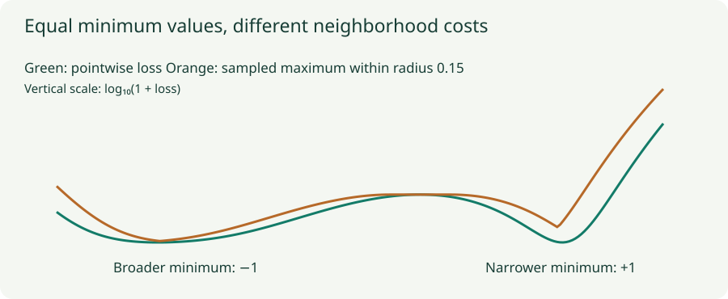

Adversarial Training and SAM: Optimize a Neighborhood
Compare worst-case input and weight perturbations, derive their first-order directions, and inspect the two-pass updates.
Random perturbations ask a model to behave well on average around a point. Adversarial methods instead search for a damaging perturbation within a specified neighborhood. Adversarial training usually perturbs the input; sharpness-aware minimization, or SAM, perturbs the weights. That choice of variable changes what robustness means.
1. Adversarial training protects an input neighborhood
A common robust objective is
The inner problem searches for a high-loss allowed input near $x$, holding the model fixed. The outer problem updates the model so those difficult inputs become less damaging. The norm, radius, valid input domain, and preprocessing define the threat model. Robustness to one such neighborhood does not establish robustness to every possible distribution shift.
2. Derive the first-order attack direction
Linearize the loss around the input: $\ell(x+\delta)\approx\ell(x)+g_x^T\delta$, where $g_x=\nabla_x\ell$. For an $L_\infty$ constraint, each coordinate can independently move between $-\varepsilon$ and $\varepsilon$. To maximize the dot product, choose each sign to agree with its gradient:
For an $L_2$ ball, Cauchy–Schwarz gives $g_x^T\delta\le\|g_x\|_2\varepsilon$, with equality at $\delta=\varepsilon g_x/\|g_x\|_2$ when the gradient is nonzero. For $g_x=(3,-4)$ and $\varepsilon=0.1$, the $L_2$ perturbation is $(0.06,-0.08)$, while the $L_\infty$ perturbation is $(0.1,-0.1)$. Their norms and allowable sets differ.
Projected gradient ascent repeats an ascent step and projects back into the allowed neighborhood. For an $L_\infty$ attack, one step is $\delta\leftarrow\operatorname{clip}(\delta+\alpha\operatorname{sign}\nabla_\delta\ell,-\varepsilon,\varepsilon)$. Also enforce valid input bounds. If pixels are normalized, translate the budget into the corresponding coordinates rather than silently using the same number in different units.
3. SAM protects a weight neighborhood
SAM instead considers $\min_w\max_{\|e\|_2\le\rho}L(w+e)$. Its usual first-order inner approximation uses
The algorithm temporarily moves uphill to probe a nearby parameter setting, then uses the gradient measured there to update the original weights. With a plain SGD outer step, $w^+=w-\eta g_{\rm SAM}$. The temporary perturbation is removed before applying this step. Leaving it in place changes the algorithm.
For $L(w)=w^2/2$, $w=1$, $\rho=0.1$, and $\eta=0.2$, ordinary SGD gives $0.8$. SAM probes at $1.1$, measures gradient $1.1$, restores $w=1$, and updates to $0.78$. It does not update from $1.1$ to $0.88$.

4. Lab: pointwise loss versus a neighborhood objective
Probe a broader and a narrower minimum
The exact plotted loss is $L(w)=(w^2-1)^2[0.3+(w+1)^2]$. The orange curve approximates the neighborhood maximum by evaluating 101 evenly spaced perturbations in $[-\rho,\rho]$ at each location. The vertical axis shows $\log_{10}(1+L)$ so both valleys remain visible; readouts show the original loss. Compare the sampled maximum with SAM’s single gradient-directed probe. Step buttons use learning rate $0.01$.
Move exactly to either minimum. The first-order gradient is zero, so this implementation uses a zero SAM perturbation. Yet the sampled neighborhood maximum is positive when $\rho>0$. This exposes an important limitation: a single linearized probe is not an exact inner maximizer. Real SAM training uses nonzero batch gradients much of the time, but that does not remove the distinction.
5. What the two passes must do
- Compute the current batch loss and its weight gradient at the original parameters.
- Build the normalized perturbation using the intended parameter groups and norm; handle a zero norm safely.
- Temporarily add the perturbation, clear old gradients, and compute a fresh loss and gradient at the perturbed parameters.
- Restore the original weights, then let the base optimizer use the fresh gradient.
The common first-order SAM implementation treats the constructed perturbation as fixed for the second gradient; it does not differentiate through the procedure that computed $e$. This is an approximation associated with the update, not a general instruction to discard derivatives from arbitrary nested objectives.
Specify how dropout masks, augmentation, and normalization statistics behave across the two passes. Otherwise the second pass may measure a combination of weight perturbation and unrelated stochastic changes. BatchNorm running statistics should not accidentally be updated twice in a way the implementation did not intend. Gradient accumulation and distributed training also need a consistent definition of the gradient whose norm determines the perturbation.
6. Flatness depends on parameterization
A function-preserving rescaling of adjacent layers can change the apparent sharpness measured in raw weight coordinates. Thus a small neighborhood loss in one parameterization is not an architecture-independent certificate of generalization. ASAM modifies the perturbation geometry to account for parameter scaling. The important question is which neighborhood is being optimized and why that neighborhood is useful.
SAM commonly costs an additional forward and backward pass, so compare it under a meaningful compute budget. Its radius, base optimizer, schedule, and batch size interact. It is a training objective and update choice, not a proof that a model resists input attacks.
7. Virtual adversarial training connects this to consistency
VAT searches for an input perturbation that changes a predictive distribution, using a divergence from the model’s current prediction instead of a ground-truth label. It then penalizes that local inconsistency. This can use unlabeled examples, but it still requires an informative overall training objective. Input attacks against supervised loss, VAT against prediction consistency, and SAM against weight-space loss are three different inner problems.
Questions with answers
The uphill probe finds a locally difficult parameter setting. The outer step then reduces the loss measured there, starting from the original weights.
No. It solves a linearized inner problem. Curvature, constraints, and stationary points can make the exact worst perturbation different.
No. It perturbs weights. Robustness to input perturbations must be trained or evaluated for the specified input threat model.
Sources
Goodfellow et al., Explaining and Harnessing Adversarial Examples; Madry et al., Towards Deep Learning Models Resistant to Adversarial Attacks; Foret et al., Sharpness-Aware Minimization; Kwon et al., ASAM; Miyato et al., Virtual Adversarial Training.